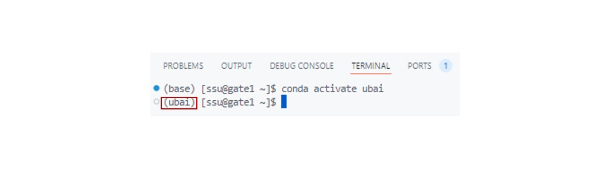
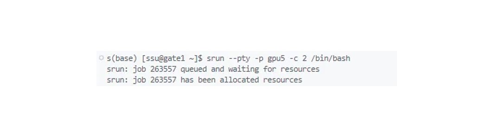
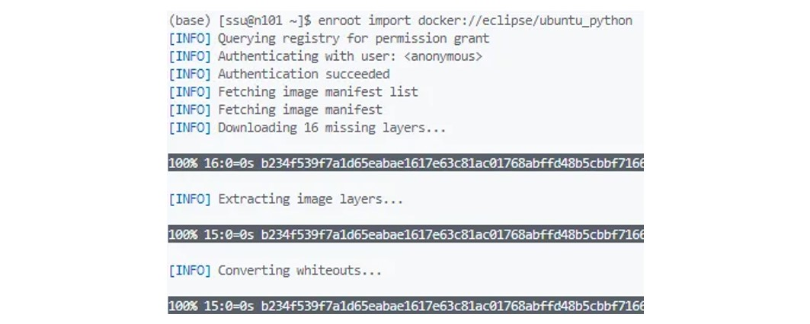
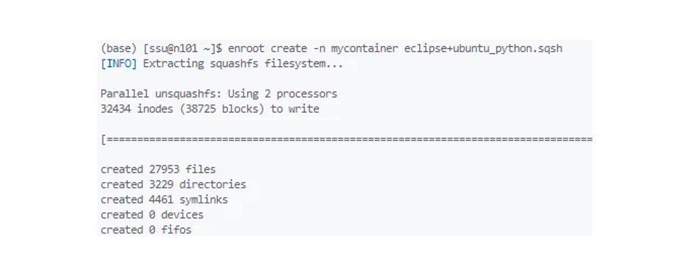

(ubai) [ssu@gate1 ~]$ module avail
---------------------- /opt/ohpc/pub/modulefiles ----------------------
CUDA/11.2.2 cmake/3.24.2 cuda/11.2.2
EasyBuild/4.9.1 compiler-rt/latest cuda/11.3.1
R/4.3.1 compiler-rt/2023.1.0 (D) cuda/11.4.4
advisor/latest compiler-rt32/latest cuda/11.5.2
advisor/2023.1.0 (D) compiler-rt32/2023.1.0 (D) cuda/11.6.2
autotools compiler/latest cuda/11.7.1
ccl/latest compiler/2023.1.0 (D) cuda/11.8.0
ccl/2021.9.0 (D) compiler32/latest cuda/12.0.0
clck/latest compiler32/2023.1.0 (D) cuda/12.1.1
clck/2021.7.3 (D) cuda/leejihun_cuda cuda/12.2.1 (D)
Where:
D: Default Module
If the avail list is too long consider trying:
"module --default avail" or "ml -d av" to just list the default modules.
"module overview" or "ml ov" to display the number of modules for each name.
Use "module spider" to find all possible modules and extensions.
Use "module keyword key1 key2 ..." to search for all possible modules matching any of the "keys".Chapter3. 환경 구축
환경 구축은 프로젝트의 안정적이고 효율적인 진행을 위한 핵심적인 단계입니다.
특히 다양한 운영체제(OS), 프레임워크, 라이브러리 간의 버전 차이는 예상치 못한 충돌과 오류를 일으킬 수 있어 사전 예방이 중요합니다.
이러한 문제를 방지하기 위해 프로젝트마다 독립된 환경을 구축하여 각 요소의 버전을 관리하는 것이 필수적입니다.
가상환경을 활용하면 각 프로젝트에 적합한 버전의 OS, 라이브러리, 패키지 등을 자유롭게 설치하고 관리할 수 있으며, 프로젝트 간에 서로 영향을 주지 않도록 독립적인 환경을 보장할 수 있습니다. 그리고 이를 통해 다양한 환경 설정을 실험하거나 손쉽게 유지보수할 수 있게 됩니다. 특히 공동 작업 시, 동일한 환경을 공유하여 호환성을 높이고 버전 차이에 따른 문제를 최소화할 수 있습니다.
아래에서는 Linux 환경과 Conda 및 Enroot를 활용한 가상환경 구축 방법에 대해 자세히 설명합니다.
1. Linux 환경 설정
💡 Environment Modules
Environment Modules는 사용자로 하여금
Unix/Linux 환경 설정을 쉽게 수정할 수 있도록 돕는 모듈입니다.
Environment Modules를 활용하면 환경변수(PATH 등)을
일일히 다시 지정해 줄 필요가 없습니다.
공식 홈페이지(https://modules.sourceforge.net/)에서 다운로드 할 수 있습니다. 1.1 Module avail
UBIA Cluster 내에서 사용 가능한 모든 모듈을 확인할 수 있는 명령어입니다.
1.2 Module show
사용하고자 하는 모듈의 세부 정보를 확인할 수 있는 명령어입니다.
(ubai) [ssu@gate1 ~]$ module show cuda/11.2.2
------------------------------------------------
/opt/ohpc/pub/modulefiles/cuda/11.2.2:
------------------------------------------------
whatis("Name: CUDA Collection")
whatis("Version: 11.2.2")
whatis("Category: cuda")
prepend_path("PATH","/opt/ohpc/pub/cuda/11.2.2/bin")
prepend_path("INCLUDE","/opt/ohpc/pub/cuda/11.2.2/include")
prepend_path("LD_LIBRARY_PATH","/opt/ohpc/pub/cuda/11.2.2/lib64")
family("cuda")
help([[
This module loads the CUDA
Version 11.2.2
]])1.3 Module load
특정 모듈을 불러와 사용할 수 있는 명령어입니다. 여러 모듈을 동시에 불러올 수도 있습니다.
(ubai) [ssu@gate1 ~]$ module load cuda/11.2.21.4 Module list
현재 사용 중인 모듈의 목록을 확인할 수 있는 명령어입니다.
(ubai) [ssu@gate1 ~]$ module list
Currently Loaded Modules:
1) cuda/11.2.2 2) dal/latest1.5 Module rm
사용 목록에서 특정 모듈을 제거할 때 사용하는 명령어입니다.
(ubai) [ssu@gate1 ~]$ module rm dal/latest
Removing dal version 2023.1.0
Use `module list` to view any remaining dependent modules.1.6 Module purge
module rm와 달리 전체 사용 목록을 초기화하기 위해 사용하는 명령어입니다. module purge실행 후 module list에 아무런 module이 출력되지 않는 것을 확인할 수 있습니다.
(ubai) [ssu@gate1 ~]$ module purge
(ubai) [ssu@gate1 ~]$ module list
No modules loaded2. Python 환경 설정
💡 Python
Python은 웹 어플리케이션, 소프트웨어 개발, 데이터 사이언스,
머신러닝, 딥러닝에 널리 사용되는 프로그래밍 언어입니다.
오픈소스 환경을 가지고 있으며, 많은 사람들이 이용하는 언어입니다.파이썬을 활용하기 위해서는 보통 Anaconda를 활용하지만 리눅스 컴퓨팅 환경에서는 Miniconda를 활용합니다. UBAI 슈퍼컴퓨터에서도 파이썬을 이용하기 위해서는 Miniconda를 사용해야 합니다.
💡 Miniconda
Anaconda는 머신러닝이나 데이터 분석 등에 사용하는
여러가지 패키지가 기본적으로 포함되어있는 파이썬 배포판입니다.
파이썬의 가상환경을 구축하는데 매우 유용하게 사용됩니다.
Miniconda는 Anaconda의 경량버전이라고 볼 수 있습니다.2.1 Minicoda 설치
Miniconda 설치를 진행하기 위해서는 Miniconda의 다운로드 사이트 링크를 이용한 다운로드 방법을 채택합니다.
메뉴에서 새 terminal을 생성하시고 terminal 칸에 아래의 명령어를 입력합니다. 이는 Miniconda 다운로드 파일 인터넷으로부터 다운로드하는 과정입니다.
wget https://repo.anaconda.com/miniconda/Miniconda3-latest-Linux-x86_64.shwget으로 받은 파일을 이용해 bash 명령어를 통해서 설치를 진행합니다.
bash Miniconda3-latest-Linux-x86_64.sh실행하면 Miniconda 사용에 따른 안내문과 같은 내용이 뜨기 때문에 내용이 꽤 깁니다. 라이센스 동의에 대한 내용이 모두 나타날 때까지 Enter를 꾹 눌러줍니다. 그 후 라이센스 동의 확인에 대한 질문에 ‘yes’ 라고 입력해줍니다. Enter를 너무 오래 눌러 동의 화면이 바로 넘어가지 않게 주의하세요.
화면에서 해당 경로가 자신의 서버에 있는 경로와 맞는지 확인 후 Enter를 눌러줍니다.
처음 접속 시, conda init 진행 선택에 대한 질문이 뜹니다. ’yes’를 입력하신 후 enter를 눌러주시면 됩니다.
변경사항 반영을 위해 지금 작업한 창을 닫고 새로 접속하세요.
재접속 시, terminal에
(base)[사용자ID@사용자_gate_number]가 보인다면 성공적으로 설치가 완료된 것입니다. 설치 후 왼쪽의 탐색기(Explorer) 목록에 miniconda 폴더가 있는지 꼭 확인해주세요.
2.2 Minicoda 실행
Miniconda 설치 후, Python 가상 환경을 생성하여 실행합니다.
가상환경을 생성하여 사용하면 Python 패키지의 호환성 문제(Package Dependencies)를 해결하기 좋습니다. 여러 프로젝트나 공모전을 진행함에 있어 각 작업에 필요한 Python 패키지를 환경 별로 설치하여 따로 관리하기에 용이합니다.
- 가상 환경 생성을 위해 아래의 명령어를 terminal에 입력합니다.
conda create -n {가상환경_이름} python={설치할_Python_버전}
ex. conda create -n ubai python=3.11
- 생성한 가상환경에 진입합니다.
conda activate {가상환경_이름}
ex. conda activate ubai

최초 한 번만 가상환경을 만들어두면, 이후에는 해당 가상환경에 conda activate를 통해 바로 접근할 수 있습니다.
또한 conda info --envs를 통해 이미 생성되어있는 가상환경의 리스트를 확인할 수도 있으니, 참고 바랍니다.
📌 참고 사항
해당 가상 환경에서 Jupyter notebook의 사용을 희망할 시, 아래의 명령어를 입력하세요.
pip install ipykernel jupyerlab or conda install ipykernel jupyterlab
※ Python 환경에서는 패키지 설치를 위해
pip install 명령어를 이용합니다.
3. Enroot
enroot는 evidia에서 개발한 경량화된 컨테이너 런타임으로, 복잡한 컨테이너 관리 없이 간단하게 컨테이너를 실행할 수 있게 도와줍니다.
주로 연구 환경에서 패키지 호환이 되지 않는, 일명 ’소프트웨어 종속성 문제’를 해결하고, 필요한 작업을 root 권한으로 수행할 수 있는 안전한 환경을 제공합니다.
NVIDIA가 제공하는 공식 문서에서 enroot의 자세한 설명을 확인할 수 있습니다.
💡 현재 UBAI 슈퍼컴퓨터는 Rocky Linux 8.8 버전을 사용하고 있습니다.
이러한 환경에서 발생할 수 있는 문제점은 두 가지가 있습니다.
첫째, /home 경로 안에서 다양한 사용자들이 함께 사용하고 있기 때문에 /home 경로의 외적인 부분에 영향을 미칠 수 있는 권한인 root 권한을 부여하기 어려운 점이 있습니다. 이에 따라, sudo 접근이 불가능합니다.
둘째, Rocky Linux는 dnf라는 패키지 매니저를 사용하는데, 해당 패키지 매니저가 가지고 있지 않는 패키지들이 있습니다. dnf search 패키지명 명령어를 통해서 dnf라는 패키지 매니저가 설치해줄 수 있는 패키지들을 확인할 수 있는데요, 이 때 패키지를 찾을 수 없는 경우에는 다른 운영 체제를 사용해야 합니다.
이 경우 원하는 패키지를 설치하는 레퍼런스를 찾아보면, 일반적으로 Rocky Linux가 아닌 대중적인 리눅스 환경을 사용할 것입니다. 대표적인 예로, ubuntu나 centos를 들 수 있습니다.
따라서 여기서는 ubuntu OS를 설정하는 방법을 알아보겠습니다.
3.1 Enroot 컨테이너 기능
우리 클러스터는 사용자에게 enroot 명령어를 제공하고 있습니다. 이를 통해 시스템 소프트웨어 및 운영체제 종속적인 작업을 root 권한으로 안전하게 수행할 수 있도록 합니다. 클러스터의 확장을 통해서 2TB의 로컬 스토리지가 추가되었고, 이를 enroot 용으로 사용하게 되었습니다(각 노드의 /enroot에 데이터 위치).
참고로 enroot 명령어는 계산 노드에서만 수행 가능하기 때문에, 반드시 srun을 통해서 노드 내에서 실행시켜야 합니다! (사용자들이 기본적으로 진입하는 포인트인 gate1과 gate2 안에서 가상 환경을 실행시키면 안됩니다.)
따라서 gate에서부터 직접 노드들에 접속하여 가상 환경을 만들어야 합니다.
이러한 노드의 접근을 돕는 명령어가 srun입니다. enroot는 docker 환경을 기반으로 컨테이너 가상화를 돕는 명령어입니다. 기존의 Rocky linux 8.8 버전에서 활용하기 어려운 작업들이나, sudo 권한이 필요한 경우 가상환경 내에서 sudo 명령어 관련을 쓸 수 있습니다.
3.2 Image와 Container
이러한 enroot는 docker 환경에서의 image와 container 기반으로 이루어져있습니다.
docker는 가상 환경을 만드는 데 큰 도움을 주는 소프트웨어이며, enroot는 docker와 비슷한 환경을 조성하여, docker 기반의 image나 container을 실행시킬 수 있도록 도와줍니다.
💡 Image
`image`는 어떤 실행 환경을 템플릿의 형태로 만들어 둔 것입니다.
컨테이너는 이미지에 쓰여있는 대로 환경이 구성되게 됩니다.
예를 들어, ubuntu 운영체제와 함께 파이썬 라이브러리들이 설치되어있는 환경을 이미지로 만들었다면,
나중에 이 이미지를 실행시키면,
ubuntu 운영체제와 다양한 파이썬 라이브러리들이 사전에 설치되어 있는 가상환경이 생겨
보다 쉽고 빠르게 작업을 할 수 있게 되는 것입니다.
image들이 모아져있는 dockerhub을 찾아보면
다양한 소프트웨어들이 이미지의 형태로 제공되고 있다는 것을 알 수 있습니다.💡 Container
`container`는 이러한 이미지를 실행시켜 만든 가상 환경입니다.
컨테이너 환경은 이미지에 쓰여있던 대로 모든 세팅 절차를 거쳐 실행 환경을 구성한 것입니다.
이 때 사용자는 명령어를 통해 가상 환경에 진입할 수 있으며,
가상 환경 내에서는 모든 파일을 마음대로 조작할 수 있는 `root` 권한을 얻을 수 있게 됩니다.3.3 Enroot 가상환경 실행
(1) 계산 노드 진입
sbatch 명령어와는 다르게 enroot 명령어는 slurm에 의해 특별히 스케줄링 되는 명령어가 아닙니다.
따라서 직접 계산 노드에 진입하여, 그 노드 위에서 Linux의 작업처럼 진행해야 합니다.
# gpu5 파티션 노드에 진입
srun --pty -p gpu5 -c 2 /bin/bash
(2) Enroot 이미지 다운로드
enroot 이미지는 작성 후 로컬 스토리지에 보관할 수도 있으며 (1~3), docker hub에서 이미지를 다운로드할 수도 있습니다.
docker hub에서 이미지를 받을 때에는 꼭 docker:// 접두사를 붙여야 합니다.
# dockerhub에서 원하는 이미지를 다운로드
enroot import docker://eclipse/ubuntu_python
(3) Enroot 이미지 실행 및 컨테이너 생성
변환된 이미지를 enroot에서 사용할 수 있도록 생성하고 실행합니다.
이를 통해 enroot 컨테이너를 생성합니다.
이미지를 다운로드하고, 파일을 살펴보면 ubuntu.sqsh와 같은 확장자를 가진 이미지가 생깁니다.
아래의 명령어를 통해 이미지로 가상환경을 세팅할 수 있습니다.
# 다운로드된 이미지 ubuntu.sqsh를 컨테이너로 만듦
enroot create -n mycontainer eclipse_ubuntu_python.sqsh
(4) Enroot 컨테이너 진입
# 컨테이너 환경에 진입 (version.1)
enroot start mycontainer
# 컨테이너 환경에 진입 (version.2)
enroot start --root --rw --mount .:/mnt ubuntu-test /bin/bash여기서 주목할 점은 --mount .:/mnt 명령을 통해 호스트에 있는 디렉터리를 컨테이너에 특정 디렉터리로 마운트할 수 있다는 점입니다.
따라서 mnt 디렉토리에 들어가시면 원래 본인의 home 디렉터리에 있는 파일들이 그대로 있는 것을 확인할 수 있습니다.
(5) EEnroot 이미지 저장
enroot에서는 기본적으로 컨테이너의 상태가 유지되지 않기 때문에, 작업한 환경을 다시 실행할 수 있도록 하려면 환경을 이미지로 만들어 두는 과정이 필요합니다.
enroot에서는 생성한 컨테이너 내에서 설정이나 파일 등을 추가해도 해당 내용이 지속되지 않습니다.
그래서 생성한 컨테이너 환경을 저장해 나중에 재사용하고 싶다면 변경한 환경을 새로운 이미지로 저장해야 합니다.
기존 컨테이너에서 작업을 마친 후, 환경 구축 상에서 변화가 있다면 다음과 같이 별도의 이미지로 저장할 수 있습니다.
enroot export mycontainer new_image.sqsh이미지가 생성되면, 이 이미지를 기반으로 컨테이너를 새로 만들고 실행할 수 있습니다.
이 과정으로 수정된 환경을 영구적으로 유지할 수 있으며, 나중에 해당 이미지를 기반으로 원하는 작업을 이어나갈 수 있습니다.
(6) Enroot 컨테이너 종료
exitexit 외에도 Ctrl+D를 눌러서도 빠져나올 수 있습니다.